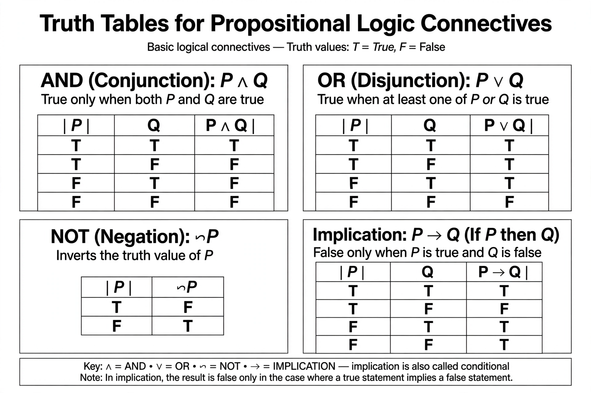

Propositional logic, also known as propositional calculus or sentential logic, is the branch of logic that studies ways of joining and modifying entire propositions, statements or sentences to form more complicated propositions, statements or sentences, as well as the logical relationships and properties that are derived from these methods of combining or altering statements. In propositional logic, the simplest statements are considered as indivisible, atomic units, hence it does not study the internal structure of propositions, unlike first-order logic.
| Propositional logic | |
|---|---|
 Truth tables define the meaning of the logical connectives. | |
| Field | Mathematical logic, philosophy, computer science |
| Key connectives | ¬ (not), ∧ (and), ∨ (or), → (implies), ↔ (iff) |
| Semantics | Truth tables, truth-functional valuations |
| Properties | Sound, complete, decidable |
Propositional logic is typically studied through a formal system in which formulas of a formal language are interpreted by assignments of truth values to the atomic propositions. Important questions studied include whether a given formula is a tautology (true under every assignment), whether it is satisfiable, and what it entails. Unlike first-order logic, propositional logic is decidable: there exist mechanical procedures, such as truth tables, that determine the status of any formula in finitely many steps, although the satisfiability problem (SAT) is NP-complete in general.
The systematic study of propositional logic began in antiquity with the Stoic philosophers, especially Chrysippus (c. 279–206 BCE), who developed a logic of propositions connected by "if", "and", and "or". The subject was revived in the nineteenth century by George Boole, whose algebraic treatment of logic appeared in The Laws of Thought (1854), and by Gottlob Frege, whose Begriffsschrift (1879) gave the first complete axiomatization. Bertrand Russell and A. N. Whitehead made it the foundation of Principia Mathematica (1910–1913), and the truth-table method was popularized through the work of Ludwig Wittgenstein, Emil Post, and others in the 1920s.
The language of propositional logic consists of propositional variables (usually written p, q, r, …), which stand for atomic propositions, and logical connectives. Well-formed formulas are built up recursively: every propositional variable is a formula; if φ is a formula, so is ¬φ; and if φ and ψ are formulas, so are (φ ∧ ψ), (φ ∨ ψ), (φ → ψ), and (φ ↔ ψ). Strictly, a small set of connectives such as {¬, →} suffices, because all the others can be defined in terms of them; the connectives are all truth-functional, meaning the truth value of a compound formula depends only on the truth values of its parts.
A valuation assigns to each propositional variable one of two truth values, true (1) or false (0), and the assignment is extended to all formulas by the truth tables for the connectives. A formula that is true under every valuation is a tautology; a formula true under at least one valuation is satisfiable; a formula false under every valuation is a contradiction. A set of premises Γ semantically entails a conclusion φ (written Γ ⊨ φ) if every valuation making all of Γ true also makes φ true.
| p | q | p ∧ q | p ∨ q | p → q | p ↔ q |
|---|---|---|---|---|---|
| T | T | T | T | T | T |
| T | F | F | T | F | F |
| F | T | F | T | T | F |
| F | F | F | F | T | T |
Propositional logic can be presented through several kinds of deductive apparatus: Hilbert-style axiomatic systems, natural deduction in the style of Gerhard Gentzen, the sequent calculus, resolution, and semantic tableaux. The central metatheoretical results are soundness (everything provable is a tautology) and completeness (every tautology is provable), proved for this system in the 1920s by Post and others. Because the system is decidable and complete, proof-theoretic and semantic methods coincide in power.
Propositional logic underlies digital circuit design, where formulas correspond to networks of logic gates; the Boolean satisfiability problem is the canonical NP-complete problem and the target of industrial SAT solvers used in hardware and software verification; and propositional encodings appear throughout artificial intelligence, automated theorem proving, and knowledge representation.